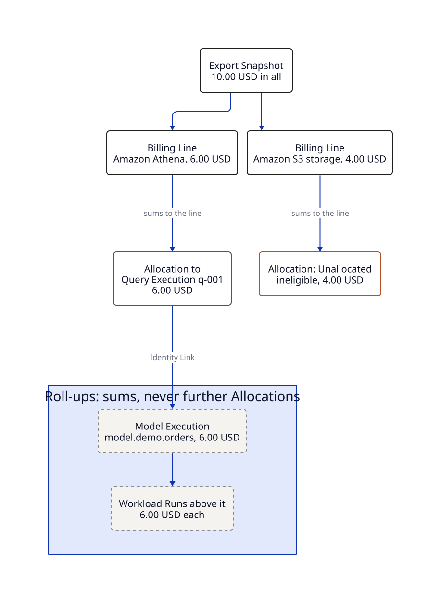

The bill is authoritative
data-finops never decides how much something cost. The cloud provider's bill does. Workload metadata only decides where the bill's money goes. This page explains that rule and how data-finops checks it. The decisions are in ADR 0003, ADR 0015 and ADR 0016, and the pipeline is in spec 03. They stay authoritative.
Metadata moves money, never makes it
A provider's bill arrives as an Export Snapshot of Billing Lines, kept in the Ledger exactly as published: every cost column, credits, currencies and revisions. A Calculation Run splits each Billing Line into Allocations. Query history, dbt artifacts and OpenLineage events say which Query Execution used what. They never add a cent. A Query Execution that scanned more takes a larger share of its Billing Line, but the amount to share is always what the provider billed.
So an Allocation can be an estimate, while the totals stay exact. Every Billing Line is split exactly once, and its Allocations sum to its amount, negative Adjustments included.

What cannot be explained stays Unallocated
Money with no Evidence is not spread over whatever ran nearby. It becomes Unallocated, with its reason, and is shown, never hidden or guessed. In the tutorial's bill, the $4.00 S3 storage line stays Unallocated as ineligible, because no Allocation Policy allocates storage yet. A bill that is half Unallocated is still a true bill. A bill whose Unallocated money has been quietly spread is not.
Above a Query Execution, nothing is allocated again. A Model Execution or a Workload Run gets money only as a Roll-up: a sum of the Allocations linked to it. So a Roll-up can never hold more than the bill gave out.
Reconciliation proves it
Reconciliation is exact, for each Billing Line, currency and Cost Basis. It is checked twice:
- When an Export Snapshot is loaded, the Ledger's totals must equal the provider's. Rows are never deduplicated, so nothing the provider billed is lost (ADR 0019).
- After a Calculation Run, the Allocations must sum to the Billing Lines.
The Reconciliation Delta is the signed difference, and it is zero when Reconciliation holds. /v1/reconciliation reports it. An Allocation to a Billing Line the bill lacks, or in the wrong currency, counts against a billed amount of zero, so invented money shows as a delta and cannot hide.
Each Cost Basis reconciles on its own
A FOCUS Billing Line has several cost columns, such as BilledCost and EffectiveCost. Each one is reconciled separately, and none is derived from another. The default view is BilledCost, because it matches the invoice. EffectiveCost, which spreads commitments and discounts, can be selected instead. See HTTP API for the cost_basis parameter.